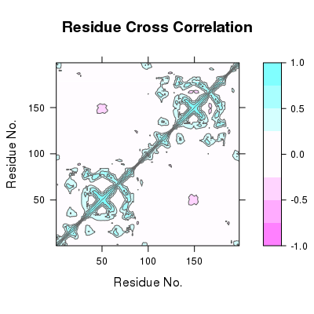
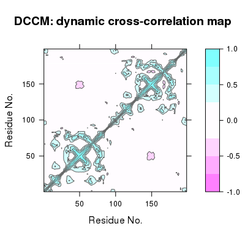

dccm(x, reference = apply(xyz, 2, mean), grpby = NULL, ncore = 1, nseg.scale = 1, ...)
xyz that should be considered as a group
(e.g. atoms from a particular residue). ncore>1 requires multicore package installed. fit.xyz. Determine the cross-correlations of atomic displacements.
The extent to which the atomic fluctuations/displacements of a system are correlated with one another can be assessed by examining the magnitude of all pairwise cross-correlation coefficients (see McCammon and Harvey, 1986).
This function returns a matrix of all atom-wise cross-correlations whose elements, Cij, may be displayed in a graphical representation frequently termed a dynamical cross-correlation map, or DCCM.
If Cij = 1 the fluctuations of atoms i and j are completely correlated (same period and same phase), if Cij = -1 the fluctuations of atoms i and j are completely anticorrelated (same period and opposite phase), and if Cij = 0 the fluctuations of i and j are not correlated.
Typical characteristics of DCCMs include a line of strong cross-correlation along the diagonal, cross-correlations emanating from the diagonal, and off-diagonal cross-correlations. The high diagonal values occur where i = j, where Cij is always equal to 1.00. Positive correlations emanating from the diagonal indicate correlations between contiguous residues, typically within a secondary structure element or other tightly packed unit of structure. Typical secondary structure patterns include a triangular pattern for helices and a plume for strands. Off-diagonal positive and negative correlations may indicate potentially interesting correlations between domains of non-contiguous residues.
Returns a cross-correlation matrix.
Grant, B.J. et al. (2006) Bioinformatics 22, 2695--2696.
McCammon, A. J. and Harvey, S. C. (1986) Dynamics of Proteins and Nucleic Acids, Cambridge University Press, Cambridge.
This function is currently very basic i.e. inefficient and SLOW.
##-- Read example trajectory file trtfile <- system.file("examples/hivp.dcd", package="bio3d") trj <- read.dcd(trtfile)NATOM = 198 NFRAME= 351 ISTART= 0 last = 351 nstep = 351 nfile = 351 NSAVE = 1 NDEGF = 0 version 24 Reading (x100) | | | 0% | | | 1% | |= | 1% | |= | 2% | |== | 2% | |== | 3% | |=== | 4% | |=== | 5% | |==== | 5% | |==== | 6% | |===== | 7% | |===== | 8% | |====== | 8% | |====== | 9% | |======= | 9% | |======= | 10% | |======= | 11% | |======== | 11% | |======== | 12% | |========= | 12% | |========= | 13% | |========== | 14% | |========== | 15% | |=========== | 15% | |=========== | 16% | |============ | 17% | |============ | 18% | |============= | 18% | |============= | 19% | |============== | 19% | |============== | 20% | |============== | 21% | |=============== | 21% | |=============== | 22% | |================ | 22% | |================ | 23% | |================= | 24% | |================= | 25% | |================== | 25% | |================== | 26% | |=================== | 27% | |=================== | 28% | |==================== | 28% | |==================== | 29% | |===================== | 29% | |===================== | 30% | |===================== | 31% | |====================== | 31% | |====================== | 32% | |======================= | 32% | |======================= | 33% | |======================== | 34% | |======================== | 35% | |========================= | 35% | |========================= | 36% | |========================== | 37% | |========================== | 38% | |=========================== | 38% | |=========================== | 39% | |============================ | 39% | |============================ | 40% | |============================ | 41% | |============================= | 41% | |============================= | 42% | |============================== | 42% | |============================== | 43% | |=============================== | 44% | |=============================== | 45% | |================================ | 45% | |================================ | 46% | |================================= | 47% | |================================= | 48% | |================================== | 48% | |================================== | 49% | |=================================== | 49% | |=================================== | 50% | |=================================== | 51% | |==================================== | 51% | |==================================== | 52% | |===================================== | 52% | |===================================== | 53% | |====================================== | 54% | |====================================== | 55% | |======================================= | 55% | |======================================= | 56% | |======================================== | 57% | |======================================== | 58% | |========================================= | 58% | |========================================= | 59% | |========================================== | 59% | |========================================== | 60% | |========================================== | 61% | |=========================================== | 61% | |=========================================== | 62% | |============================================ | 62% | |============================================ | 63% | |============================================= | 64% | |============================================= | 65% | |============================================== | 65% | |============================================== | 66% | |=============================================== | 67% | |=============================================== | 68% | |================================================ | 68% | |================================================ | 69% | |================================================= | 69% | |================================================= | 70% | |================================================= | 71% | |================================================== | 71% | |================================================== | 72% | |=================================================== | 72% | |=================================================== | 73% | |==================================================== | 74% | |==================================================== | 75% | |===================================================== | 75% | |===================================================== | 76% | |====================================================== | 77% | |====================================================== | 78% | |======================================================= | 78% | |======================================================= | 79% | |======================================================== | 79% | |======================================================== | 80% | |======================================================== | 81% | |========================================================= | 81% | |========================================================= | 82% | |========================================================== | 82% | |========================================================== | 83% | |=========================================================== | 84% | |=========================================================== | 85% | |============================================================ | 85% | |============================================================ | 86% | |============================================================= | 87% | |============================================================= | 88% | |============================================================== | 88% | |============================================================== | 89% | |=============================================================== | 89% | |=============================================================== | 90% | |=============================================================== | 91% | |================================================================ | 91% | |================================================================ | 92% | |================================================================= | 92% | |================================================================= | 93% | |================================================================== | 94% | |================================================================== | 95% | |=================================================================== | 95% | |=================================================================== | 96% | |==================================================================== | 97% | |==================================================================== | 98% | |===================================================================== | 98% | |===================================================================== | 99% | |======================================================================| 99% | |======================================================================| 100%## Read the starting PDB file to determine atom correspondence pdbfile <- system.file("examples/hivp.pdb", package="bio3d") pdb <- read.pdb(pdbfile) ## select residues 24 to 27 and 85 to 90 in both chains inds <- atom.select(pdb,"///24:27,85:90///CA/")Build selection from input string segid chain resno resid eleno elety Stest "" "" "24:27,85:90" "" "" "CA" Natom "198" "198" "20" "198" "198" "198" * Selected a total of: 20 intersecting atoms *## lsq fit of trj on pdb xyz <- fit.xyz(pdb$xyz, trj, fixed.inds=inds$xyz, mobile.inds=inds$xyz) ## DCCM (slow to run so restrict to Calpha) cij <- dccm(xyz) ## Plot DCCM plot(cij)
## Or library(lattice) contourplot(cij, region = TRUE, labels=F, col="gray40", at=c(-1, -0.75, -0.5, -0.25, 0.25, 0.5, 0.75, 1), xlab="Residue No.", ylab="Residue No.", main="DCCM: dynamic cross-correlation map")